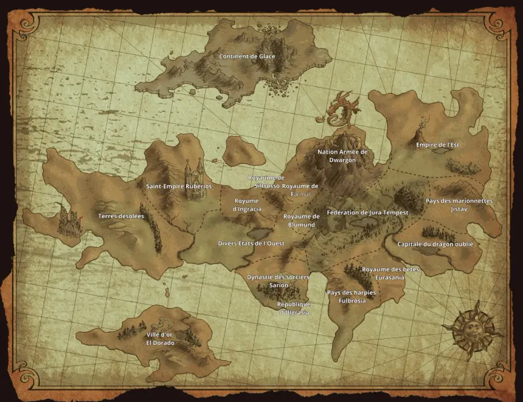

Moi, quand je me réincarne en Slime

Ce site est un fan made, je suis juste étudiant en NSI et sur mon temps libre, je code un peu.
La structure du site est ainsi : une petite page de présentation, un menu dit "Hamburger" dans le coin gauche qui affiche tous les tomes ainsi que les personnages dans l'odre d'apparition.
De plus, l'ajout de plusieurs catégories, tel les jeux-vidéos, les films et les spin-offs est en cours.
Chaque personnage as une page web dédiée et chaque nom de personnage est un lien vers de redirection, tel Wikipédia.
Maintenant, entrons dans le vif, tout d'abord la carte du monde.
Celle-ci est séparée en différentes parties, tel les états-unis.

Maintenant, je vais vous faire un petit résumé "a ma sauce"
L'histoire débute dans le japon de nos jours, on suit Satoru Mikami, un employé de bureau qui rejoint 2 de ses collègues : Tamura et sa petite amie Miho Sawatari. Peu après que nos trois comparses se soient retrouvés, un homme apparaît avec un couteau à la main et poignarde Satoru, le pauvre n'avait rien demandé, il était juste au mauvais endroit au mauvais moment et se retrouve au sol, agonisant dans son propre sang, il décède sous les yeux de Tamura qui s'en veut car il voulait juste se la péter d'avoir une petite amie. Peu après, Satoru entend une voix, il s'agit du système qui lui octroie la compétence "Sage" puis son évolution "Grand sage"
Après ce malencontrueux incident, on retrouve l'esprit de notre héros, mais pas son corps, il tente de se déplacer et se rend compte qu'il est devenu... un slime (on est tous étonnés au vu du titre du manga évidement). Ne pouvant rien faire d'autre que se déplacer, il le fait et absorbe tout ce qu'il peut, encore une fois, c'est la seule chose qu'il est en capacitée de faire, donc il en profite. Peu de temps après, il rencontre quelque chose, ou plutôt quelqu'un. Ce quelqu'un l'aide a développer une nouvelle compétence, après lui avoir fait promettre de ne pas avoir peur, la détection de mana, une fois la compétence débloquée, notre ami, qui n'as pas encore de nom, voit pour la première fois son bienfaiteur qui s'avère être Veldra Tempest, nos 2 amis se lient d'amitié et s'octroient l'un l'autre des noms, choses très importante dans ce nouvel univers car tout le monde n'as pas de nom comme nous le découvrirons plus tard. Satoru devient Limule et notre Veldra acquiert le nom de famille "Tempest".